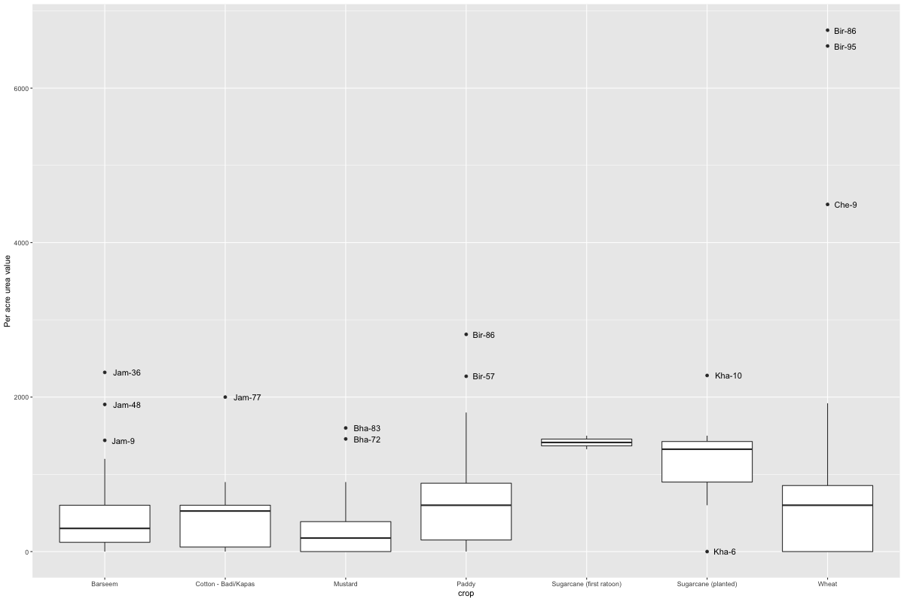

Prachi’s Corrections for Input Use and Labour
Table of Contents
1 Guidelines for data entry
- If information on number of days men/women/children worked is given when contract was on piece rate basis- it should be entered in labour days column.
- Check cropping pattern to verify if any fodder crop was grown. If it is grown the labour use should be entered for such crops.
- Entry for loading, unloading and transporting the produce to home (at least, if not market) should be made for each crop (not for fodder crop)
- In case of fodder crops, harvesting days should be entered. Based on standard in the village.
- If harvesting is done using combine, entry for threshing should not be there
- If harvesting is done by hand, mandatory entry for threshing
- If crop is destroyed, an entry should exist in the cropping pattern.
- In case of Wheat crop, an entry for reaper should be made if the crop was cut by combine.
- In case of threshing, an entry for threshing machine operator and an additional entry for manual labour which is hired plus family labour if they engage in agricultural work should be made for accounting the work of loading etc done during threshing.
- NOTE that machine hours are total hours, not daily hours
- If children have been reported to work in the field, necessary adjustment in labour use is to be made.
- Add “999” in case the information is missing
- All codes should be entered in ascending order.
- NOTE: All inputs that are used for a particular crop should have an equivalent entry in labour use. For example an entry for applying manure must exist if manure is reported in input use. Check the same for spray, fertilisers, pesticides etc.
- For entering data on machinery, one entry for the operator, one for the machine and one for any extra manual labour that was used should be made separately.
2 Read data
3 Missing input data
| villagename | householdnumber | serialnumber | balnkfield | inputcategory | inputtype |
|---|---|---|---|---|---|
| Bhadas | 207 | 1 | source | Seed/Planting material | --- |
| Khandrai | 33 | 1 | source | Water | Diesel/Electricity |
| Khandrai | 33 | 3 | source | Seed/Planting material | --- |
| Khandrai | 33 | 4 | source | Seed/Planting material | --- |
| Khandrai | 33 | 5 | source | Seed/Planting material | --- |
| Khandrai | 44 | 1 | inputtype | Chemical fertiliser | --- |
| villagename | householdnumber | cropno |
|---|---|---|
| Cheher Kalan | 13 | 2 |
| Khandrai | 10 | 2 |
| villagename | householdnumber | crop |
|---|---|---|
| Khandrai | 36 | Cotton - Badi/Kapas |
| Khandrai | 36 | Wheat |
| Khandrai | 36 | Paddy |
| Khandrai | 36 | Paddy |
| Khandrai | 36 | Jowar fodder |
| Khandrai | 36 | Bajra |
| Khandrai | 36 | Barseem |
| Khandrai | 6 | Wheat |
| Khandrai | 6 | Paddy |
| Khandrai | 6 | Jowar fodder |
| Khandrai | 6 | Sugarcane (planted) |
| Khandrai | 6 | Barseem |
| Khandrai | 18 | Wheat |
| Khandrai | 18 | Paddy |
| Khandrai | 19 | Wheat |
| Khandrai | 19 | Paddy |
| Khandrai | 21 | Wheat |
| Khandrai | 21 | Paddy |
| Khandrai | 21 | Sugarcane (planted) |
| Khandrai | 21 | Vegetables |
| Khandrai | 24 | Wheat |
| Khandrai | 24 | Jowar fodder |
| Khandrai | 24 | Bajra |
| Khandrai | 24 | Sugarcane (planted) |
| Khandrai | 24 | Barseem |
| Khandrai | 24 | Vegetables |
| Khandrai | 27 | Wheat |
| Khandrai | 30 | Wheat |
| Khandrai | 30 | Paddy |
| Khandrai | 30 | Jowar fodder |
| Khandrai | 30 | Barseem |
| Khandrai | 33 | Wheat |
| Khandrai | 33 | Paddy |
| Khandrai | 33 | Jowar fodder |
| Khandrai | 33 | Sugarcane (planted) |
| Khandrai | 33 | Barseem |
| Khandrai | 50 | Wheat |
| Khandrai | 50 | Paddy |
| Khandrai | 10 | Fallow |
| Khandrai | 10 | Fallow |
| Khandrai | 11 | Fallow |
| Khandrai | 25 | Fallow |
| Khandrai | 28 | Fallow |
| Khandrai | 28 | Fallow |
| Khandrai | 29 | Fallow |
| Khandrai | 32 | Fallow |
| Khandrai | 32 | Fallow |
| Jamalpur Shekhan | 30 | Fallow |
| Jamalpur Shekhan | 30 | Fallow |
| Jamalpur Shekhan | 49 | Fallow |
| Jamalpur Shekhan | 71 | Fallow |
| Jamalpur Shekhan | 71 | Fallow |
| villagename | householdnumber | cropnumber | blankfield |
|---|---|---|---|
| Cheher Kalan | 3 | 2 | monthsofsowing |
| Cheher Kalan | 8 | 6 | monthsofsowing |
| Cheher Kalan | 12 | 3 | monthsofsowing |
| Cheher Kalan | 13 | 2 | monthsofsowing |
| Cheher Kalan | 13 | 3 | monthsofsowing |
| Cheher Kalan | 13 | 4 | monthsofsowing |
| Cheher Kalan | 13 | 1 | monthsofsowing |
| Cheher Kalan | 13 | 5 | monthsofsowing |
| Cheher Kalan | 13 | 6 | monthsofsowing |
| Cheher Kalan | 13 | 7 | monthsofsowing |
| Cheher Kalan | 23 | 1.1 | monthsofsowing |
| Khandrai | 10 | 6 | monthsofsowing |
| Khandrai | 10 | 7 | monthsofsowing |
| Khandrai | 11 | 4 | monthsofsowing |
| Khandrai | 24 | 6 | monthsofsowing |
| Khandrai | 25 | 5 | monthsofsowing |
| Khandrai | 28 | 6 | monthsofsowing |
| Khandrai | 28 | 7 | monthsofsowing |
| Khandrai | 29 | 5 | monthsofsowing |
| Khandrai | 32 | 4 | monthsofsowing |
| Khandrai | 32 | 5 | monthsofsowing |
| Khandrai | 35 | 4 | monthsofsowing |
| Cheher Kalan | 29 | 3 | monthsofsowing |
| Cheher Kalan | 39 | 5 | monthsofsowing |
| Cheher Kalan | 42 | 2 | monthsofsowing |
| Birdhana | 1 | 7 | monthsofsowing |
| Cheher Kalan | 50 | 1 | monthsofsowing |
| Birdhana | 13 | 6 | monthsofsowing |
| Birdhana | 13 | 7 | monthsofsowing |
| Birdhana | 33 | 4 | monthsofsowing |
| Birdhana | 36 | 3 | monthsofsowing |
| Birdhana | 36 | 4 | monthsofsowing |
| Birdhana | 35 | 2 | monthsofsowing |
| Birdhana | 35 | 4 | monthsofsowing |
| Birdhana | 63 | 2 | monthsofsowing |
| Birdhana | 63 | 4 | monthsofsowing |
| Birdhana | 67 | 5 | monthsofsowing |
| Birdhana | 67 | 3 | monthsofsowing |
| Birdhana | 67 | 4 | monthsofsowing |
| Birdhana | 57 | 6 | monthsofsowing |
| Birdhana | 58 | 3 | monthsofsowing |
| Birdhana | 58 | 4 | monthsofsowing |
| Birdhana | 58 | 5 | monthsofsowing |
| Birdhana | 58 | 1 | monthsofsowing |
| Birdhana | 70 | 1 | monthsofsowing |
| Birdhana | 70 | 2 | monthsofsowing |
| Birdhana | 77 | 6 | monthsofsowing |
| Birdhana | 77 | 3 | monthsofsowing |
| Birdhana | 78 | 3 | monthsofsowing |
| Birdhana | 78 | 4 | monthsofsowing |
| Birdhana | 81 | 4 | monthsofsowing |
| Birdhana | 81 | 7 | monthsofsowing |
| Birdhana | 83 | 6 | monthsofsowing |
| Birdhana | 86 | 6 | monthsofsowing |
| Birdhana | 87 | 8 | monthsofsowing |
| Birdhana | 88 | 2 | monthsofsowing |
| Birdhana | 90 | 6 | monthsofsowing |
| Birdhana | 91 | 2 | monthsofsowing |
| Birdhana | 91 | 4.1 | monthsofsowing |
| Birdhana | 92 | 3 | monthsofsowing |
| Birdhana | 92 | 4 | monthsofsowing |
| Birdhana | 93 | 2 | monthsofsowing |
| Birdhana | 96 | 8 | monthsofsowing |
| Birdhana | 97 | 3 | monthsofsowing |
| Birdhana | 97 | 6 | monthsofsowing |
| Birdhana | 97 | 7 | monthsofsowing |
| Gijji | 154 | 4 | monthsofsowing |
| Bhadas | 79 | 2 | monthsofsowing |
| householdnumber | villagename | cropid | cropoperationcode | typeofworker | labourunit |
|---|---|---|---|---|---|
| 7 | Khandrai | 4 | 6120 | Daily labour | Acre |
| 9 | Khandrai | 5 | 2320 | Daily labour | Acre |
| 9 | Khandrai | 6 | 2320 | Daily labour | Acre |
| 9 | Khandrai | 3 | 5200 | Daily labour | kg |
| 10 | Khandrai | 7 | 6610 | Long-term labour | Acre |
| 19 | Khandrai | 3 | 6430 | Family labour | Acre |
| 19 | Khandrai | 3 | 6610 | Family labour | Tractor-trolley |
| 36 | Khandrai | 3 | 6150 | Family labour | Acre |
| 31 | Khandrai | 7 | 6610 | Family labour | Tractor-trolley |
| 31 | Khandrai | 7 | 6610 | Family labour | Tractor-trolley |
| 31 | Khandrai | 27 | 6610 | Family labour | Tractor-trolley |
| Crop | Operation | labour hours per acre |
|---|---|---|
| Cotton - Badi/Kapas | Land preparation | 6.04 |
| Cotton - Badi/Kapas | Planting | 4.07 |
| Cotton - Badi/Kapas | Intercultural water management | 11.95 |
| Cotton - Badi/Kapas | Other intercultural operations | 18.25 |
| Cotton - Badi/Kapas | Weeding | 59.57 |
| Coantialias tton - Badi/Kapas | Harvest and post-harvest operations | 108.67 |
| Mustard | Planting | 9.1 |
| Mustard | Harvest and post-harvest operations | 28.12 |
| Mustard | Land preparation | 4 |
| Mustard | Other intercultural operations | 4 |
| Mustard | Intercultural water management | 10 |
| Wheat | Land preparation | 4.04 |
| Wheat | Intercultural water management | 7.73 |
| Wheat | Other intercultural operations | 8.94 |
| Wheat | Harvest and post-harvest operations | 5.8 |
| Wheat | Planting | 1.85 |
| Wheat | Weeding | 61.54 |
| Paddy | Land preparation | 15.28 |
| Paddy | Other intercultural operations | 20.58 |
| Paddy | Weeding | 24.9 |
| Paddy | Intercultural water management | 182.2 |
| Paddy | Harvest and post-harvest operations | 7.51 |
| Paddy | Planting | 18.22 |
| Jowar fodder | Land preparation | 23.72 |
| Jowar fodder | Planting | 0.92 |
| Jowar fodder | Intercultural water management | 19.22 |
| Jowar fodder | Other intercultural operations | 5.16 |
| Jowar fodder | Harvest and post-harvest operations | 261.59 |
| Sugarcane (planted) | Land preparation | 6.12 |
| Sugarcane (planted) | Other intercultural operations | 27.38 |
| Sugarcane (planted) | Intercultural water management | 160.62 |
| Sugarcane (planted) | Planting | 40 |
| Sugarcane (planted) | Weeding | 2 |
| Barseem | Other intercultural operations | 11.24 |
| Barseem | Land preparation | 4.76 |
| Barseem | Planting | 2.19 |
| Barseem | Harvest and post-harvest operations | 392.17 |
| Barseem | Intercultural water management | 41.33 |
| Vegetables | Land preparation | 1.6 |
| Vegetables | Other intercultural operations | 7.36 |
| Vegetables | Intercultural water management | 6.4 |
| Vegetables | Harvest and post-harvest operations | 960 |
| Flower | Land preparation | 49.33 |
| Flower | Intercultural water management | 60 |
| Flower | Weeding | 66.67 |
| Flower | Planting | 2 |
| Flower | Other intercultural operations | 17.33 |
| Sugarcane (first ratoon) | Other intercultural operations | 78 |
| Sugarcane (first ratoon) | Intercultural water management | 320 |
| villagename | householdnumber | cropnumber |
|---|---|---|
| Khandrai | 34 | 3 |
| Khandrai | 34 | 6 |
| Khandrai | 36 | 7 |
| Khandrai | 39 | 2 |
| Khandrai | 33 | 3 |
| Khandrai | 33 | 5 |
| Khandrai | 35 | 4 |
| Khandrai | 27 | 4 |
| Khandrai | 27 | 7 |
| Khandrai | 35 | 2 |
| Khandrai | 37 | 2 |
| Khandrai | 29 | 4 |
| Khandrai | 29 | 2 |
| Khandrai | 37 | 3 |
| Khandrai | 35 | 5 |
| Khandrai | 39 | 4 |
| Birdhana | 76 | 1 |
| Birdhana | 86 | 6 |
| Birdhana | 4 | 2 |
| Birdhana | 4 | 4 |
| Birdhana | 1 | 4 |
| Birdhana | 1 | 6 |
| Birdhana | 1 | 7 |
| Birdhana | 5 | 2 |
| Birdhana | 5 | 4 |
| Birdhana | 83 | 4 |
| Birdhana | 83 | 5 |
| Birdhana | 78 | 3 |
| Birdhana | 78 | 4 |
| Birdhana | 81 | 5 |
| Birdhana | 85 | 3 |
| Birdhana | 85 | 5 |
| Birdhana | 77 | 5 |
| Birdhana | 84 | 3 |
| Birdhana | 84 | 6 |
| Birdhana | 88 | 2 |
| Birdhana | 88 | 4 |
| Birdhana | 76 | 4 |
| Birdhana | 89 | 2 |
| Birdhana | 90 | 3 |
| Birdhana | 90 | 5 |
| Birdhana | 89 | 4 |
| Gijji | 80 | 2 |
| Birdhana | 87 | 2 |
| Birdhana | 87 | 7 |
| Birdhana | 87 | 5 |
| Birdhana | 96 | 4 |
| Gijji | 80 | 4 |
| Birdhana | 97 | 3 |
| Birdhana | 97 | 6 |
| Birdhana | 95 | 3 |
| Birdhana | 9 | 3 |
| Birdhana | 9 | 5 |
| Birdhana | 17 | 2 |
| Birdhana | 17 | 4 |
| Birdhana | 58 | 4 |
| Birdhana | 58 | 5 |
| Birdhana | 27 | 7 |
| Birdhana | 14 | 3 |
| Birdhana | 14 | 5 |
| Birdhana | 34 | 3 |
| Birdhana | 34 | 5 |
| Birdhana | 24 | 3.1 |
| Birdhana | 24 | 4 |
| Birdhana | 24 | 3.2 |
| Birdhana | 36 | 3 |
| Birdhana | 36 | 4 |
| Birdhana | 16 | 2 |
| Birdhana | 16 | 4 |
| Birdhana | 35 | 2 |
| Birdhana | 35 | 4 |
| Birdhana | 68 | 4 |
| Birdhana | 68 | 6 |
| Cheher Kalan | 50 | 1 |
| Cheher Kalan | 45 | 2.2 |
| Cheher Kalan | 40 | 2 |
| Cheher Kalan | 39 | 5 |
| Cheher Kalan | 43 | 3 |
| Birdhana | 67 | 3 |
| Cheher Kalan | 29 | 5 |
| Cheher Kalan | 21 | 2.2 |
| Cheher Kalan | 13 | 3 |
| Khandrai | 21 | 4 |
| Khandrai | 30 | 4 |
| Khandrai | 29 | 3 |
| Birdhana | 63 | 2 |
| Birdhana | 63 | 4 |
| Birdhana | 63 | 5 |
| Birdhana | 96 | 7 |
| Birdhana | 95 | 4 |
| Khandrai | 8 | 2 |
| Khandrai | 30 | 2 |
| Khandrai | 24 | 6 |
| Khandrai | 25 | 3 |
| Khandrai | 25 | 4 |
| Cheher Kalan | 39 | 4 |
| Cheher Kalan | 32 | 4 |
| Cheher Kalan | 48 | 5 |
| Khandrai | 6 | 4 |
| Khandrai | 6 | 5 |
| Khandrai | 10 | 3 |
| Khandrai | 10 | 5 |
| Gijji | 87 | 4 |
| Gijji | 101 | 2 |
| Gijji | 106 | 1 |
| Gijji | 126 | 5 |
| Gijji | 154 | 2 |
| Gijji | 154 | 3 |
| Gijji | 85 | 4 |
| Bhadas | 76 | 2 |
| Bhadas | 194 | 1 |
| Bhadas | 198 | 1 |
| Bhadas | 199 | 1 |
| Bhadas | 201 | 1 |
| Bhadas | 207 | 1 |
| Bhadas | 215 | 1 |
| Bhadas | 215 | 2 |
| villagename | householdnumber | cropid |
|---|---|---|
| Jamalpur Shekhan | 16 | 4 |
| Jamalpur Shekhan | 12 | 24 |
| Jamalpur Shekhan | 5 | 4 |
| Jamalpur Shekhan | 9 | 5 |
| Jamalpur Shekhan | 14 | 4 |
| Jamalpur Shekhan | 9 | 4 |
| Jamalpur Shekhan | 16 | 4 |
| Jamalpur Shekhan | 19 | 3 |
| Jamalpur Shekhan | 19 | 3 |
| Jamalpur Shekhan | 36 | 3 |
| Jamalpur Shekhan | 36 | 3 |
| Jamalpur Shekhan | 36 | 3 |
| Jamalpur Shekhan | 36 | 3 |
| Jamalpur Shekhan | 51 | 4 |
| Jamalpur Shekhan | 51 | 4 |
| Jamalpur Shekhan | 51 | 3 |
| Khandrai | 31 | 1 |
| Khandrai | 38 | 3 |
| Birdhana | 5 | 3 |
| Birdhana | 12 | 3 |
| Khandrai | 33 | 3 |
| Khandrai | 36 | 1 |
| Khandrai | 36 | 3 |
| Khandrai | 36 | 3 |
| Khandrai | 44 | 7 |
| Birdhana | 16 | 1 |
| Birdhana | 24 | 4 |
| Birdhana | 24 | 4 |
| Birdhana | 24 | 4 |
| Birdhana | 24 | 4 |
| villagename | householdnumber | cropid |
| villagename | householdnumber | cropid |
|---|---|---|
| Jamalpur Shekhan | 12 | 24 |
| Jamalpur Shekhan | 12 | 24 |
| Khandrai | 10 | 3 |
| Khandrai | 38 | 3 |
| Khandrai | 39 | 4 |
| Birdhana | 5 | 3 |
| Birdhana | 12 | 3 |
| villagename | householdnumber | cropnumber | Extent.in.acres |
|---|---|---|---|
| Cheher Kalan | 3 | 2 | --- |
| Birdhana | 96 | 8 | --- |
| Birdhana | 67 | 5 | --- |
| Cheher Kalan | 43 | 3 | --- |
| Birdhana | 67 | 4 | --- |
| Cheher Kalan | 23 | 1.1 | --- |
| Khandrai | 24 | 6 | --- |
| Cheher Kalan | 39 | 4 | --- |
4 Boxplot
household[villages,on=c(village_id="id")][,.(village_name,household_number,id)]->t merge(crop,t,by.x="sno_id",by.y="id",all.x=TRUE)->t merge(t,labouruse,by.x=c("sno_id","crop_id"),by.y=c("sno_id","crop_id"))->p p[,.(sno_id,crop_id,Extent.in.acres,household_number,village_name,crop_operation_stage,crop_operation_code,type_of_worker,measurement_unit_id,work_units,daily_hours,total_payment_in_cash,manual_machine_or_operator)]->p2 merge(p2,measurement_unit,by.x="measurement_unit_id",by.y="id")->p2 p2[labourunit=="Days",.(village_name,household_number,crop_id,crop_operation_stage,crop_operation_code,type_of_worker,labourunit,daily_hours,work_units,Extent.in.acres,manual_machine_or_operator,sno_id)]->p2 #p2[,.(diff1=length(manual_machine_or_operator=="Operator"),diff2=length(manual_machine_or_operator=="Machine"))] p2[work_units!=999 & daily_hours!=999 & manual_machine_or_operator!="Machine",.(labour_time=sum(work_units*daily_hours)),by=,.(village_name,Extent.in.acres,crop_id,crop_operation_code,crop_operation_stage,type_of_worker,manual_machine_or_operator,sno_id)]->k k[,.(labour_time=sum(labour_time)),by=,.(village_name,sno_id,crop_id,crop_operation_stage)]->k2 k[,.(acreage=(Extent.in.acres)),by=,.(village_name,sno_id,crop_id)]->k3 unique(k3)->k3 merge(k2,k3,by=c("village_name","sno_id","crop_id"))->a a[,.(labour_use=sum(labour_time)/sum(acreage)),by=,.(village_name,sno_id,crop_id,crop_operation_stage)]->a merge(a,code_crop,by.x="crop_id",by.y="id")->a a[crop=="Paddy"|crop=="Wheat"|crop=="Barseem"]->a1 ggplot(a1,aes(x=crop_operation_stage,y=labour_use))->a1 a1+geom_boxplot()+scale_y_continuous(limits=c(0,1000))+facet_grid(~crop)+theme(axis.text.x = element_text(angle = 90, hjust = 1, vjust = 0.5)) labour.graph <- function(df, na.rm = TRUE, ...){ for (i in 1:27) {plot1 <- ggplot(subset(a,as.numeric(crop_id)==1), aes(x=crop_operation_stage,y=labour_use)) +geom_boxplot()+scale_y_continuous(limits=c(0,500)) plot1 } ## } ## labour.graph(a)
household[villages,on=c(village_id="id")][,.(village_name,household_number,id)]->t merge(crop,t,by.x="sno_id",by.y="id",all.x=TRUE)->t merge(t,labouruse,by=c("sno_id","crop_id"))->p merge(p,measurement_unit,by.x="measurement_unit_id",by.y="id")->p2 merge(p2,code_crop,by.x="crop_id",by.y="id")->a a[village_name!="Khandrai"]->a a[labourunit=="Days" & work_units==999,.(entries_blank=length(unique(sno_id))),by=.(crop,crop_operation_stage,crop_operation_code)]->m a[labourunit=="Days" & work_units!=999,.(entries_filled=length(unique(sno_id))),by=.(crop,crop_operation_stage,crop_operation_code)]->m1 merge(m,m1,by=c("crop","crop_operation_stage","crop_operation_code"),all.x=TRUE)->j j[entries_filled>9]->j1 p2[labourunit=="Days",.(village_name,household_number,crop_id,crop_operation_stage,crop_operation_code,type_of_worker,labourunit,daily_hours,work_units,Extent.in.acres,manual_machine_or_operator,sno_id)]->p2 p2[work_units!=999 & daily_hours!=999 & manual_machine_or_operator!="Machine",.(labour_time=sum(work_units*daily_hours)),by=,.(village_name,Extent.in.acres,crop_id,crop_operation_code,crop_operation_stage,type_of_worker,manual_machine_or_operator,sno_id)]->k k[,.(labour_time=sum(labour_time)),by=,.(village_name,sno_id,crop_id,crop_operation_stage,crop_operation_code)]->k2 k[,.(acreage=(Extent.in.acres)),by=,.(village_name,sno_id,crop_id)]->k3 unique(k3)->k3 merge(k2,k3,by=c("village_name","sno_id","crop_id"))->a a[,.(labour_use=sum(labour_time)/sum(acreage)),by=,.(village_name,sno_id,crop_id,crop_operation_stage,crop_operation_code)]->a subset(a,village_name!="Khandrai")->a merge(a,code_crop,by.x="crop_id",by.y="id")->a merge(j1,a,by=c("crop","crop_operation_stage","crop_operation_code"),all.x=TRUE)->l l[crop=="Cotton - Badi/Kapas"|crop=="Jowar"]->a1 ggplot(a1,aes(x=factor(crop_operation_code),y=labour_use,group=crop_operation_code))->a1 a1+geom_boxplot()+scale_y_continuous(limits=c(0,100))+facet_grid(~crop)+theme(axis.text.x = element_text(angle = 90, hjust = 1, vjust = 0.5)) p2[type_of_worker=="Piece-rated workers"&labourunit=="Acre",.(per_acre_cost=total_payment_in_cash/work_units,sno_id,crop_id,Extent.in.acres,household_number,village_name,crop_operation_stage,crop_operation_code,type_of_worker,measurement_unit_id,work_units,daily_hours,total_payment_in_cash,manual_machine_or_operator)]->p2 merge(p2,code_crop,by.x="crop_id",by.y="id")->a a[crop=="Paddy"|crop=="Wheat"|crop=="Barseem"]->a1 a1[,.(entries=length(unique(sno_id))),by=.(crop,crop_operation_stage)]->k ggplot(a1,aes(x=crop_operation_stage,y=per_acre_cost))->a1 a1+geom_boxplot()+scale_y_continuous(limits=c(0,5000))+facet_grid(~crop)+theme(axis.text.x = element_text(angle = 90, hjust = 1, vjust = 0.5)) household[villages,on=c(village_id="id")][,.(village_name,household_number,id)]->t merge(crop,t,by.x="sno_id",by.y="id",all.x=TRUE)->t merge(t,labouruse,by.x=c("sno_id","crop_id"),by.y=c("sno_id","crop_id"))->p p[,.(sno_id,crop_id,Extent.in.acres,household_number,village_name,crop_operation_stage,crop_operation_code,type_of_worker,measurement_unit_id,work_units,daily_hours,total_payment_in_cash,manual_machine_or_operator,machine_hours)]->p2 merge(p2,measurement_unit,by.x="measurement_unit_id",by.y="id")->p2 p2[type_of_worker=="Machine labour",.(village_name,household_number,crop_id,crop_operation_stage,crop_operation_code,type_of_worker,labourunit,daily_hours,work_units,Extent.in.acres,manual_machine_or_operator,sno_id,machine_hours,total_payment_in_cash)]->p2 #p2[,.(diff1=length(manual_machine_or_operator=="Operator"),diff2=length(manual_machine_or_operator=="Machine"))] p2[work_units!=999 & machine_hours!=999 & manual_machine_or_operator=="Machine" ,.(labour_time=sum(work_units*machine_hours)),by=,.(village_name,Extent.in.acres,crop_id,crop_operation_code,crop_operation_stage,type_of_worker,manual_machine_or_operator,sno_id)]->k k[,.(labour_time=sum(labour_time)),by=,.(village_name,sno_id,crop_id,crop_operation_stage)]->k2 k[,.(acreage=(Extent.in.acres)),by=,.(village_name,sno_id,crop_id)]->k3 unique(k3)->k3 merge(k2,k3,by=c("village_name","sno_id","crop_id"))->a a[,.(machine_labour_use=sum(labour_time)/sum(acreage)),by=,.(village_name,sno_id,crop_id,crop_operation_stage)]->a merge(a,code_crop,by.x="crop_id",by.y="id")->a a[crop=="Paddy"|crop=="Wheat"|crop=="Barseem"]->a1 ggplot(a1,aes(x=crop_operation_stage,y=machine_labour_use))->a1 a1+geom_boxplot()+scale_y_continuous(limits=c(0,300))+facet_grid(~crop)+theme(axis.text.x = element_text(angle = 90, hjust = 1, vjust = 0.5))

5 Other entries
household[villages,on=c(village_id="id")][,.(village_name,household_number,id)]->t merge(crop,t,by.x="sno_id",by.y="id",all.x=TRUE)->t merge(t,crop_sale,by.x=c("sno_id","crop_id"),by.y=c("sno_id","crop_number_id"),all.x=TRUE)->t crop_sale[,.(crop_number_id,sale_number,Price_main_product,Sale_main_product,sale_commodity_id,sale_unit_id,sno_id)]->m m[,.(sum(Sale_main_product)),by=.(sno_id,crop_number_id,sale_unit_id)]->m1 merge(t,labouruse,by=c("sno_id","crop_id"))->p merge(p,measurement_unit,by.x="measurement_unit_id",by.y="id")->p2 merge(p2,code_crop,by.x="crop_id",by.y="id")->a a[village_name!="Khandrai"]->a a[labourunit=="Days" & work_units==999,.(entries_blank=length(unique(sno_id))),by=.(crop,crop_operation_stage,crop_operation_code)]->m a[labourunit=="Days" & work_units!=999,.(entries_filled=length(unique(sno_id))),by=.(crop,crop_operation_stage,crop_operation_code)]->m1 merge(m,m1,by=c("crop","crop_operation_stage","crop_operation_code"),all.x=TRUE)->j j[entries_filled>9]->j1 p2[labourunit=="Days",.(village_name,household_number,crop_id,crop_operation_stage,crop_operation_code,type_of_worker,labourunit,daily_hours,work_units,Extent.in.acres,manual_machine_or_operator,sno_id)]->p2 p2[work_units!=999 & daily_hours!=999 & manual_machine_or_operator!="Machine",.(labour_time=sum(work_units*daily_hours)),by=,.(village_name,Extent.in.acres,crop_id,crop_operation_code,crop_operation_stage,type_of_worker,manual_machine_or_operator,sno_id)]->k k[,.(labour_time=sum(labour_time)),by=,.(village_name,sno_id,crop_id,crop_operation_stage,crop_operation_code)]->k2 k[,.(acreage=(Extent.in.acres)),by=,.(village_name,sno_id,crop_id)]->k3 unique(k3)->k3 merge(k2,k3,by=c("village_name","sno_id","crop_id"))->a a[,.(labour_use=sum(labour_time)/sum(acreage)),by=,.(village_name,sno_id,crop_id,crop_operation_stage,crop_operation_code)]->a subset(a,village_name!="Khandrai")->a merge(a,code_crop,by.x="crop_id",by.y="id")->a merge(j1,a,by=c("crop","crop_operation_stage","crop_operation_code"),all.x=TRUE)->l l[crop=="Cotton - Badi/Kapas"|crop=="Jowar"]->a1 ggplot(a1,aes(x=factor(crop_operation_code),y=labour_use,group=crop_operation_code))->a1 a1+geom_boxplot()+scale_y_continuous(limits=c(0,100))+facet_grid(~crop)+theme(axis.text.x = element_text(angle = 90, hjust = 1, vjust = 0.5)) p2[type_of_worker=="Piece-rated workers"&labourunit=="Acre",.(per_acre_cost=total_payment_in_cash/work_units,sno_id,crop_id,Extent.in.acres,household_number,village_name,crop_operation_stage,crop_operation_code,type_of_worker,measurement_unit_id,work_units,daily_hours,total_payment_in_cash,manual_machine_or_operator)]->p2 merge(p2,code_crop,by.x="crop_id",by.y="id")->a a[crop=="Paddy"|crop=="Wheat"|crop=="Barseem"]->a1 a1[,.(entries=length(unique(sno_id))),by=.(crop,crop_operation_stage)]->k ggplot(a1,aes(x=crop_operation_stage,y=per_acre_cost))->a1 a1+geom_boxplot()+scale_y_continuous(limits=c(0,5000))+facet_grid(~crop)+theme(axis.text.x = element_text(angle = 90, hjust = 1, vjust = 0.5)) household[villages,on=c(village_id="id")][,.(village_name,household_number,id)]->t merge(crop,t,by.x="sno_id",by.y="id",all.x=TRUE)->t merge(t,labouruse,by.x=c("sno_id","crop_id"),by.y=c("sno_id","crop_id"))->p p[,.(sno_id,crop_id,Extent.in.acres,household_number,village_name,crop_operation_stage,crop_operation_code,type_of_worker,measurement_unit_id,work_units,daily_hours,total_payment_in_cash,manual_machine_or_operator,machine_hours)]->p2 merge(p2,measurement_unit,by.x="measurement_unit_id",by.y="id")->p2 p2[type_of_worker=="Machine labour",.(village_name,household_number,crop_id,crop_operation_stage,crop_operation_code,type_of_worker,labourunit,daily_hours,work_units,Extent.in.acres,manual_machine_or_operator,sno_id,machine_hours,total_payment_in_cash)]->p2 #p2[,.(diff1=length(manual_machine_or_operator=="Operator"),diff2=length(manual_machine_or_operator=="Machine"))] p2[work_units!=999 & machine_hours!=999 & manual_machine_or_operator=="Machine" ,.(labour_time=sum(work_units*machine_hours)),by=,.(village_name,Extent.in.acres,crop_id,crop_operation_code,crop_operation_stage,type_of_worker,manual_machine_or_operator,sno_id)]->k k[,.(labour_time=sum(labour_time)),by=,.(village_name,sno_id,crop_id,crop_operation_stage)]->k2 k[,.(acreage=(Extent.in.acres)),by=,.(village_name,sno_id,crop_id)]->k3 unique(k3)->k3 merge(k2,k3,by=c("village_name","sno_id","crop_id"))->a a[,.(machine_labour_use=sum(labour_time)/sum(acreage)),by=,.(village_name,sno_id,crop_id,crop_operation_stage)]->a merge(a,code_crop,by.x="crop_id",by.y="id")->a a[crop=="Paddy"|crop=="Wheat"|crop=="Barseem"]->a1 ggplot(a1,aes(x=crop_operation_stage,y=machine_labour_use))->a1 a1+geom_boxplot()+scale_y_continuous(limits=c(0,300))+facet_grid(~crop)+theme(axis.text.x = element_text(angle = 90, hjust = 1, vjust = 0.5))
6 Householdwise table
7 Amit’s tables
| villagename | householdnumber |
|---|---|
| Bhadas | 1 |
| Bhadas | 4 |
| Bhadas | 24 |
| Bhadas | 25 |
| Bhadas | 35 |
| Bhadas | 37 |
| Bhadas | 41 |
| Bhadas | 42 |
| Bhadas | 44 |
| Bhadas | 54 |
| Bhadas | 60 |
| Bhadas | 63 |
| Bhadas | 64 |
| Bhadas | 65 |
| Bhadas | 66 |
| Bhadas | 67 |
| Bhadas | 75 |
| Bhadas | 81 |
| Bhadas | 95 |
| Bhadas | 96 |
| Bhadas | 98 |
| Bhadas | 99 |
| Bhadas | 100 |
| Bhadas | 103 |
| Bhadas | 105 |
| Bhadas | 106 |
| Bhadas | 107 |
| Bhadas | 109 |
| Bhadas | 112 |
| Bhadas | 115 |
| Bhadas | 116 |
| Bhadas | 118 |
| Bhadas | 119 |
| Bhadas | 124 |
| Bhadas | 126 |
| Bhadas | 132 |
| Bhadas | 134 |
| Bhadas | 140 |
| Bhadas | 142 |
| Bhadas | 143 |
| Bhadas | 145 |
| Bhadas | 149 |
| Bhadas | 150 |
| Bhadas | 151 |
| Bhadas | 153 |
| Bhadas | 155 |
| Bhadas | 156 |
| Bhadas | 158 |
| Bhadas | 161 |
| Bhadas | 163 |
| Bhadas | 164 |
| Bhadas | 165 |
| Bhadas | 166 |
| Bhadas | 174 |
| Bhadas | 176 |
| Bhadas | 177 |
| Bhadas | 178 |
| Bhadas | 181 |
| Bhadas | 182 |
| Bhadas | 183 |
| Bhadas | 190 |
| Bhadas | 196 |
| Bhadas | 202 |
| Bhadas | 203 |
| Bhadas | 204 |
| Bhadas | 215 |
| Bhadas | 220 |
| Bhadas | 222 |
| Bhadas | 225 |
8 Unit correction
| villagename | householdnumber | crop | main | by | unitmain | unitby | total |
|---|---|---|---|---|---|---|---|
| Bhadas | 56 | Bajra | 0 | 0 | --- | --- | 0 |
| Bhadas | 76 | Wheat | --- | --- | --- | --- | --- |
| Bhadas | 194 | Jowar fodder | --- | --- | --- | --- | --- |
| Bhadas | 198 | Jowar fodder | --- | --- | --- | --- | --- |
| Bhadas | 199 | Jowar fodder | --- | --- | --- | --- | --- |
| Bhadas | 201 | Jowar fodder | --- | --- | --- | --- | --- |
| Bhadas | 207 | Jowar fodder | --- | --- | --- | --- | --- |
| Bhadas | 215 | Bajra | --- | --- | --- | --- | --- |
| Bhadas | 215 | Jowar fodder | --- | --- | --- | --- | --- |
| Birdhana | 1 | Wheat | 130 | --- | --- | --- | --- |
| Birdhana | 1 | Paddy | 255 | --- | --- | --- | --- |
| Birdhana | 1 | Barseem | --- | --- | --- | --- | --- |
| Birdhana | 1 | Vegetables | --- | --- | --- | --- | --- |
| Birdhana | 1 | Jowar fodder | --- | --- | --- | --- | --- |
| Birdhana | 5 | Barseem | 25 | --- | --- | --- | --- |
| Birdhana | 5 | Jowar fodder | --- | --- | --- | --- | --- |
| Birdhana | 14 | Wheat | 130 | 130 | --- | --- | 260 |
| Birdhana | 14 | Barseem | --- | --- | --- | --- | --- |
| Birdhana | 16 | Wheat | 36 | 36 | --- | --- | 72 |
| Birdhana | 16 | Barseem | --- | --- | --- | --- | --- |
| Birdhana | 16 | Jowar fodder | --- | --- | --- | --- | --- |
| Birdhana | 17 | Barseem | --- | --- | --- | --- | --- |
| Birdhana | 17 | Jowar fodder | --- | --- | --- | --- | --- |
| Birdhana | 27 | Mustard | --- | --- | --- | --- | --- |
| Birdhana | 34 | Barseem | --- | --- | --- | --- | --- |
| Birdhana | 34 | Jowar fodder | --- | --- | --- | --- | --- |
| Birdhana | 35 | Barseem | --- | --- | --- | --- | --- |
| Birdhana | 35 | Jowar fodder | --- | --- | --- | --- | --- |
| Birdhana | 58 | Wheat | 260 | --- | --- | --- | --- |
| Birdhana | 58 | Barseem | --- | --- | --- | --- | --- |
| Birdhana | 58 | Jowar fodder | --- | --- | --- | --- | --- |
| Birdhana | 63 | Barseem | --- | --- | --- | --- | --- |
| Birdhana | 63 | Jowar fodder | --- | --- | --- | --- | --- |
| Birdhana | 67 | Eucalyptus | --- | --- | --- | --- | --- |
| Birdhana | 68 | Barseem | --- | --- | --- | --- | --- |
| Birdhana | 77 | Barseem | --- | --- | --- | --- | --- |
| Birdhana | 78 | Barseem | --- | --- | --- | --- | --- |
| Birdhana | 78 | Jowar fodder | --- | --- | --- | --- | --- |
| Birdhana | 81 | Moong | --- | --- | --- | --- | --- |
| Birdhana | 84 | Cotton - Badi/Kapas | 24 | --- | --- | --- | --- |
| Birdhana | 84 | Wheat | 420 | 252 | --- | --- | 672 |
| Birdhana | 84 | Barseem | --- | --- | --- | --- | --- |
| Birdhana | 84 | Jowar fodder | --- | --- | --- | --- | --- |
| Birdhana | 85 | Barseem | --- | --- | --- | --- | --- |
| Birdhana | 85 | Jowar fodder | --- | --- | --- | --- | --- |
| Birdhana | 86 | Barseem | --- | --- | --- | --- | --- |
| Birdhana | 87 | Chana | --- | --- | --- | --- | --- |
| Birdhana | 88 | Wheat | 210 | 250 | --- | --- | 460 |
| Birdhana | 88 | Barseem | --- | --- | --- | --- | --- |
| Birdhana | 88 | Jowar fodder | --- | --- | --- | --- | --- |
| Birdhana | 89 | Barseem | --- | --- | --- | --- | --- |
| Birdhana | 89 | Jowar fodder | --- | --- | --- | --- | --- |
| Birdhana | 91 | Cotton - Badi/Kapas | 7 | 20 | --- | --- | 27 |
| Birdhana | 91 | Wheat | 40 | 60 | --- | --- | 100 |
| Birdhana | 95 | Barseem | --- | --- | --- | --- | --- |
| Birdhana | 95 | Jowar fodder | --- | --- | --- | --- | --- |
| Birdhana | 96 | Wheat | 344 | 216 | --- | --- | 560 |
| Birdhana | 96 | Barseem | --- | --- | --- | --- | --- |
| Birdhana | 96 | Jowar fodder | --- | --- | --- | --- | --- |
| Birdhana | 97 | Barseem | --- | --- | --- | --- | --- |
| Birdhana | 97 | Jowar fodder | --- | --- | --- | --- | --- |
| Cheher Kalan | 21 | Wheat | 28 | 28 | --- | --- | 56 |
| Cheher Kalan | 21 | Jayee | --- | --- | --- | --- | --- |
| Cheher Kalan | 23 | Wheat | 32 | 32 | --- | --- | 64 |
| Cheher Kalan | 29 | Mustard | --- | --- | --- | --- | --- |
| Cheher Kalan | 29 | Wheat | 30 | 30 | --- | --- | 60 |
| Cheher Kalan | 39 | Jowar fodder | --- | --- | --- | --- | --- |
| Cheher Kalan | 40 | Jowar fodder | --- | --- | --- | --- | --- |
| Cheher Kalan | 43 | Jowar fodder | --- | --- | --- | --- | --- |
| Cheher Kalan | 45 | Jayee | --- | --- | --- | --- | --- |
| Cheher Kalan | 48 | Jowar fodder | --- | --- | --- | --- | --- |
| Cheher Kalan | 50 | Bajra | --- | --- | --- | --- | --- |
| Gijji | 80 | Barseem | --- | --- | --- | --- | --- |
| Gijji | 80 | Jowar fodder | --- | --- | --- | --- | --- |
| Gijji | 85 | Jowar fodder | --- | --- | --- | --- | --- |
| Gijji | 87 | Bajra | --- | --- | --- | --- | --- |
| Gijji | 99 | Bajra | 0 | 0 | --- | --- | 0 |
| Gijji | 101 | Jowar fodder | --- | --- | --- | --- | --- |
| Gijji | 106 | Wheat | --- | --- | --- | --- | --- |
| Gijji | 126 | Jowar fodder | --- | --- | --- | --- | --- |
| Gijji | 149 | Jantar | 0 | 0 | --- | --- | 0 |
| Gijji | 154 | Barseem | --- | --- | --- | --- | --- |
| Gijji | 154 | Jowar fodder | --- | --- | --- | --- | --- |
| Jamalpur Shekhan | 12 | Jowar fodder | 21 | --- | --- | --- | --- |
| Jamalpur Shekhan | 41 | Wheat | 40 | 20 | --- | --- | 60 |
| Jamalpur Shekhan | 41 | Paddy | 16 | 6 | --- | --- | 22 |
| Jamalpur Shekhan | 50 | Wheat | 16 | 18 | --- | --- | 34 |
| Jamalpur Shekhan | 50 | Jowar fodder | 36 | --- | --- | --- | --- |
| Jamalpur Shekhan | 71 | Cotton - Badi/Kapas | 20 | --- | --- | --- | --- |
| Khandrai | 8 | Jowar fodder | --- | --- | --- | --- | --- |
| Khandrai | 9 | Bajra | 3.2 | --- | --- | --- | --- |
| Khandrai | 10 | Barseem | --- | --- | --- | --- | --- |
| Khandrai | 10 | Jowar fodder | --- | --- | --- | --- | --- |
| Khandrai | 21 | Vegetables | --- | --- | --- | --- | --- |
| Khandrai | 24 | Bajra | 8 | --- | --- | --- | --- |
| Khandrai | 24 | Vegetables | --- | --- | --- | --- | --- |
| Khandrai | 25 | Barseem | --- | --- | --- | --- | --- |
| Khandrai | 25 | Jowar fodder | --- | --- | --- | --- | --- |
| Khandrai | 27 | Wheat | 45 | 30 | --- | --- | 75 |
| Khandrai | 27 | Barseem | --- | --- | --- | --- | --- |
| Khandrai | 27 | Jowar fodder | --- | --- | --- | --- | --- |
| Khandrai | 29 | Bajra | --- | --- | --- | --- | --- |
| Khandrai | 29 | Maize | --- | --- | --- | --- | --- |
| Khandrai | 29 | Jowar fodder | --- | --- | --- | --- | --- |
| Khandrai | 30 | Barseem | --- | --- | --- | --- | --- |
| Khandrai | 30 | Jowar fodder | --- | 200 | --- | 10 | --- |
| Khandrai | 33 | Paddy | 60 | 16 | --- | --- | 76 |
| Khandrai | 33 | Barseem | --- | --- | --- | --- | --- |
| Khandrai | 33 | Jowar fodder | --- | --- | --- | --- | --- |
| Khandrai | 34 | Barseem | --- | --- | --- | --- | --- |
| Khandrai | 34 | Jowar fodder | --- | --- | --- | --- | --- |
| Khandrai | 35 | Barseem | --- | --- | --- | --- | --- |
| Khandrai | 35 | Sugarcane (planted) | --- | --- | --- | --- | --- |
| Khandrai | 35 | Jowar fodder | --- | --- | --- | --- | --- |
| Khandrai | 44 | Barseem | --- | --- | --- | --- | --- |
| Khandrai | 44 | Sugarcane (first ratoon) | 1200 | --- | --- | --- | --- |
| Khandrai | 44 | Jowar fodder | --- | --- | --- | --- | --- |
| Khandrai | 47 | Bajra | --- | --- | --- | --- | --- |
| Khandrai | 47 | Barseem | --- | --- | --- | --- | --- |
| Khandrai | 47 | Jowar fodder | --- | --- | --- | --- | --- |
| --- | --- | Wheat+Mustard | --- | --- | --- | --- | --- |
| --- | --- | Barseem+Vegetables | --- | --- | --- | --- | --- |
| --- | --- | Ber | --- | --- | --- | --- | --- |